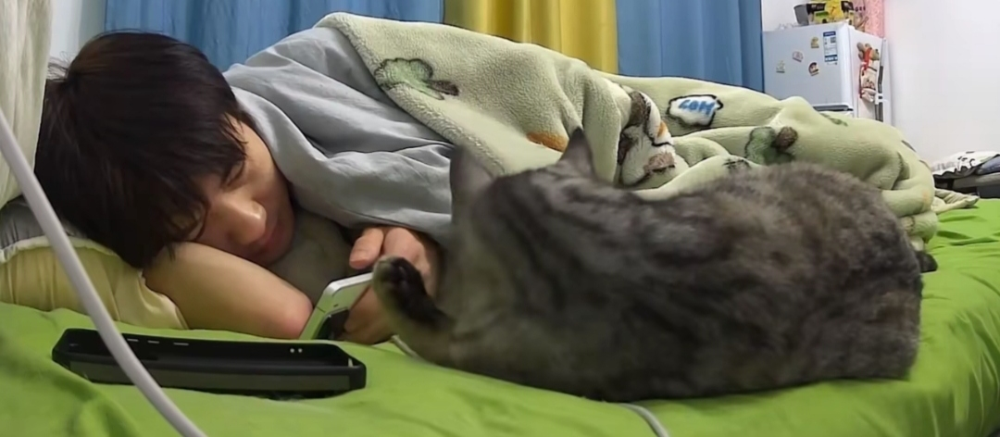
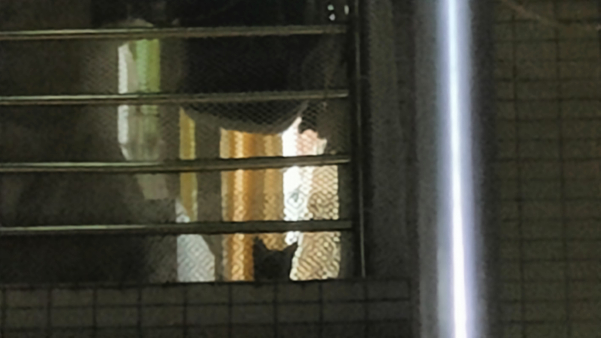

中华田园孩，抵抗力超强，战斗力爆表，现在这个品种不多见了
这几个小朋友真好，天天陪着守村人玩[捂脸]
这是哪儿啊，这么多老款小孩[捂脸]
太喜欢这个小娃娃了
她俩站一起，真是李小冉太好看了，哪像姐姐啊，原来孙俪演甄嬛的时候不这样的啊[捂脸]
李小冉一对比是真的好看，清秀高挑
站在这房地产不景气，房子不好卖了，俩人都改行当警察破案去了[微笑][微笑][微笑]
我在孙俪身上看到了邓超[捂脸]
我一定要好好的活着，看着这个宝宝上北大[呲牙][呲牙][呲牙]
刀郎老师干成了共青团没有搞成的事[感谢][感谢][感谢]，这是改革开放以来最多的一次大合唱了吧
这位老兄，可能出自正规军吧？
刀哥为啥封神，看看他独特的上帝视角。千万红歌偏偏选了这首《我们走在大路上》，瞬间令人激情澎湃，热血沸腾！……
中宣部应该给刀郎一个编制[捂脸][捂脸][赞][赞]
中华民族伟大复兴需要这种豪迈、这种气势，是当今社会的一股清流，剔除那些娘炮，我们力挺刀郎！！！[赞][赞][赞]
这才是人民的好干部。大公无私一生清正廉洁。人民永远怀念你。吴德同志永垂不朽。[感谢][感谢][感谢]
人民的好干部！吴德市长永垂不朽！[感谢][感谢][感谢]
吴德将军两袖清风，这才是人民心忠最爱戴的好干部，国家必强大，致敬，[赞][赞][赞][赞][赞][赞]
吴德精神应当代的公职人员的楷模！
这样老干部的精神，現在没有了，为吴老点赞。[赞][赞][玫瑰][玫瑰][爱心][爱心]
名字吴德，却是个厚德载物的人[赞][赞][赞][赞]
吴德铁骨铮铮，为官清廉，忠于党，忠于人民。
名叫吴德，其实是大大的有德之人！！！
吴德老人全国人民爱戴你，你是真正的人民父母官！
重点是博主很快就关注到了咪咪的异常，并且会跟着猫咪走，而不是视而不见继续玩手机
老公，你快起来看看好像哪儿漏水了
给孩急成啥样了[捂脸][泪奔]
主要是博主关心小猫，小猫一有动静他就跟着小猫去，这才是正解，要是还在那里玩手机不关心小猫，也发现不了[噢买尬]
我家猫带我去捡过钱，七百块。后来用这钱给他绝育。
太通人性了吧[黑脸]猫一站起来就知道起床[黑脸]
偷摸玩手机 熬夜 我妈进来了 我戴耳机不知道 [九转大肠] 她突然站起来 我觉得好我拍下没几秒 一个大巴掌呼了过来
感觉不止猫通人性，人也通猫性，哈哈哈哈哈哈注意到了猫，也知道跟着猫去看看啥情况[泪奔]
主播你的房间的窗帘好像网上说的串串房的窗帘[九转大肠]
不愧是父子 姿势都一模一样[黑脸] 
咪：人，别看手机了咱家漏水了
她一站，我就知道我点的外卖到了[暗中观察]
对面楼的，也是洗衣机管子掉了出来，那个水从八楼阳台倾斜而下[黑脸]人没出现，只有一个小猫头[黑脸] 
通人性的猫见多了，通猫性的人还是第一次见[捂脸][赞]
猫都快关了，你才爬起来[赞]
真好啊你通猫性[流泪]我不通，我家鱼缸漏水，我家猫一直嗷嗷叫，客厅卧室往返一直嗷嗷叫，我还寻思它发疯呢，直到睡觉关了手机被听到水哗啦哗啦的声音才意识到漏水
猫：诶？诶~？诶~~~？诶~~~？？？？？嚯~~！！！
它就那样...水灵灵的站起来了，啥也不扶的
泉哥 这个开门不[比心][比心][比心]
说杀球不重的去看看谌龙表演赛 那种视角比较直观
谁懂傩送的脸出来时的救赎感[憨笑]当时语文课上放的，全班女生都惊呼好帅[憨笑][憨笑]
到底是谁发明的独白解说啊！真的真的太有感觉了
其实女主长得也很是权威[黑脸]
你们弹幕有什么病吗？刷到好的接接接，刷到那种别人去世的都是不接不接厄运退散，要么安慰一下要么直接划走不就好了，净给别人找不痛快。。。
高中语文课放的 看的可认真了 傩送出来整个人都精神了 帅死了[憨笑][憨笑]
老师当时放了 傩送一出来全班都沸腾了[流泪]
谁懂考试的时候写傩送，结果死活想不起来叫啥，然后写成了宿傩[捂脸][捂脸]
其实当时看的时候真的觉得傩送很帅，不知道为啥，但是那个开放式结局给我刀麻了[尬笑]，头一次见oe跟be似的，我潜意识里觉得傩送是真的不会回来了……
傩送也许明天回来，也许再也不回来了
当时本来都无所谓的，傩送一出来全班眼睛都亮了，那个年代没滤镜没啥妆造纯硬帅[憨笑][击掌]
这并不是她的爷爷，而是她的外公……殉情的原因是民族通婚……
我当时只是很气女主为什么不说自己喜欢傩送[流泪]如果直接说了就是幸福的结局了，兄弟俩不会争，只要女主说了就一定能和傩送再一起。长大了我才看懂了，就算是说了，他们也不可能在一起[流泪]有门第的差距，和她母亲一样，终究不能如愿
很感谢高中的语文老师，给我们放了阿Q正传，茶馆，边城，在河北一个月放一次假的日子里偶尔看一看老电影真的爽
有些爱意太重，重到少女单薄的脊梁扛不起，只能化作渡船边一声几不可闻的叹息[流泪]
战斗力爆表[愉快][鼓掌]
傩送你就是个懦夫[流泪]
如果没猜错的话，当学到这篇课文的时候语文老师基本上都会放这部电影吧[看]
自卑啊，傩送没有特别直白地表达过心意，女孩面对两人巨大的差距，也不敢说
跨不过门第的江，划不过阶级的滩[泣不成声]
语文课本四大悲剧《边城》《阿Q正传》《骆驼祥子》《祥林嫂》都是要么疯了要么死了[困]
第一个真的吧 自己的名字刻在了别人的心上[捂脸][捂脸][捂脸][捂脸]
甘肃是唯一一个被中央查获的地下钱庄，你想一下多恐怖[微笑]
哇塞 这还是贝壳嘛 太可爱了[舔屏]

这俩是同一个[宕机]

贝壳多保持几天啊[泪奔]别再成小钻风了[捂脸]
对 没错就那么练
后面卧推的女生赶紧躲了，怕脊椎崩出来抽着她
很久没看到这种练法了，根本不经过大脑的思考，所有的动作都来自人类向往力量的本性，这才是纯粹的健身，看着都感觉酣畅淋漓。[赞]
璟将：
不行听到这句话要笑死我了[憨笑][憨笑]
那个ai“oh～baby～”，我要笑死了
对emo的记忆还停留在它掉厕所里了啊啊啊
俩个人机还真是幸福上了[憨笑] 小嘴都亲上了。
想看ai璟对战王景
哦~卑鄙~~[黑脸]
其实我有一个问题，和ai璟聊算不算梦三，别骂我我真的单纯想知道[黑脸][强壮]
:看到姐和姐夫要说
其实是国家收走了养了不到一个星期死了三只，立刻空运送回去了
动物园的红腹锦鸡：水卡嗓了，不活了！ 大爷的红腹锦鸡：有玉米粒，太好吃了！
红腹锦鸡：不把大爷养好，家族繁衍就是个困难[泪奔] 大爷：这么好看的鸡却不好吃算了，下次不吃了
红腹锦鸡有四十多只，可大爷只有一个啊，最应该保护的应该是大爷。既然红腹锦鸡这么难繁育，为什么不繁育大爷呢？[捂脸]
山西运城郭大爷[捂脸]
吃一两个怎么了，，这大爷比鸡珍贵[赞]
保护区养的：今天的食物有点干巴了，死一下吧[看] 大爷养的：太好了，朝廷的赈灾粮终于下来了，下个崽庆祝一下[舔屏]
很多濒危动物其实如果开放养的话，要不了多少年很快就泛滥了 因为养主都是花高价买的，会很认真对待 可是国家并没有采取这种建议
Read more: